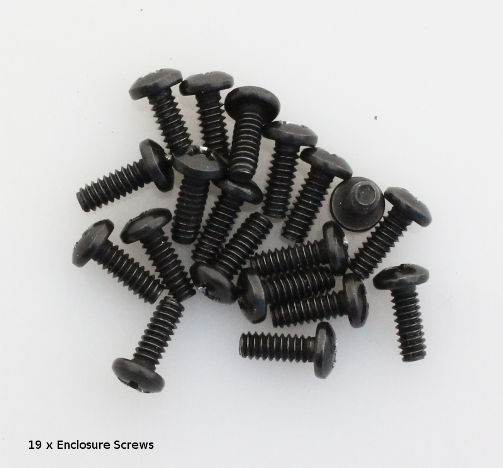
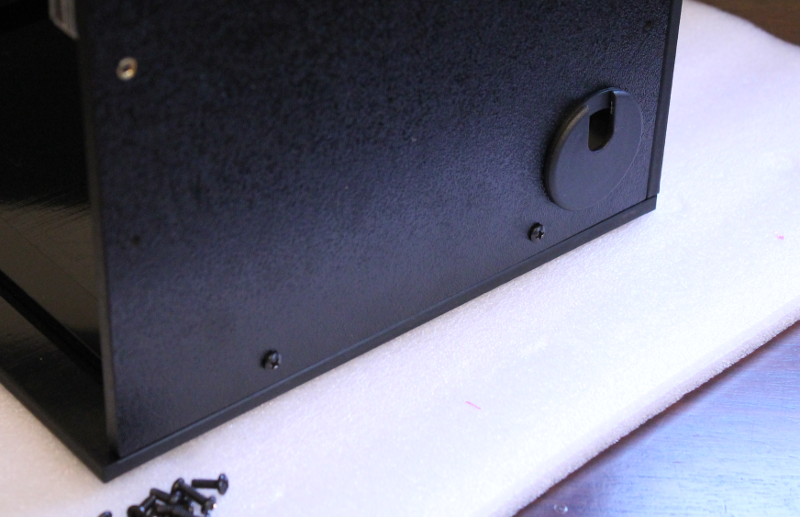
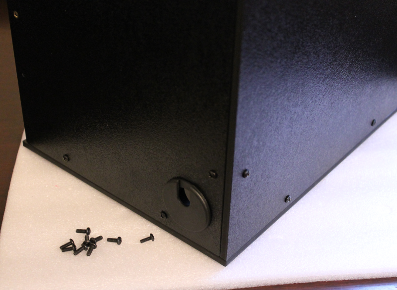
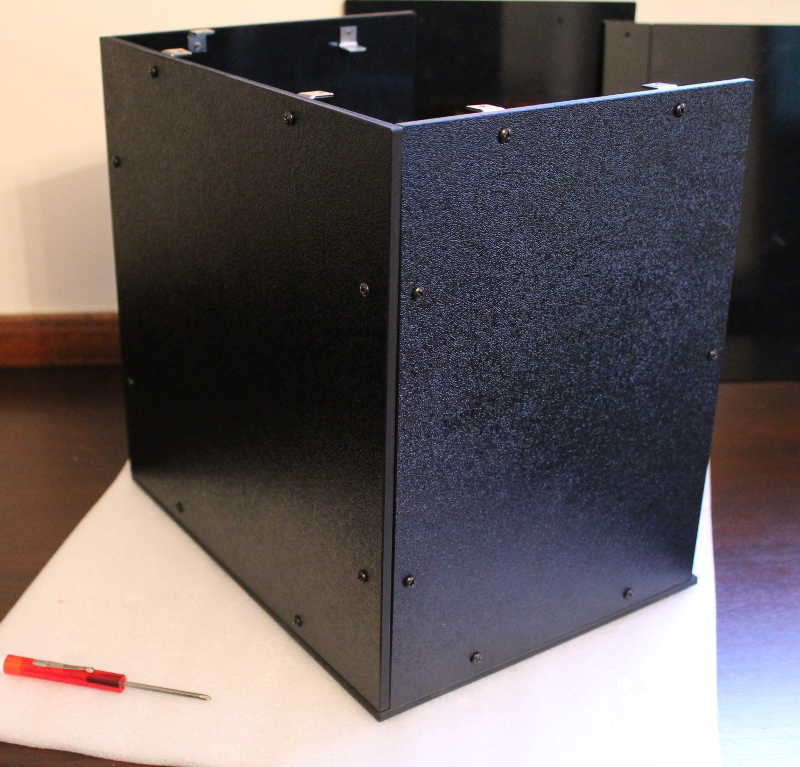
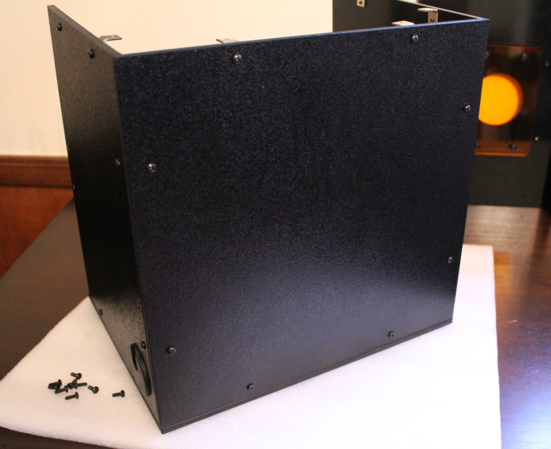
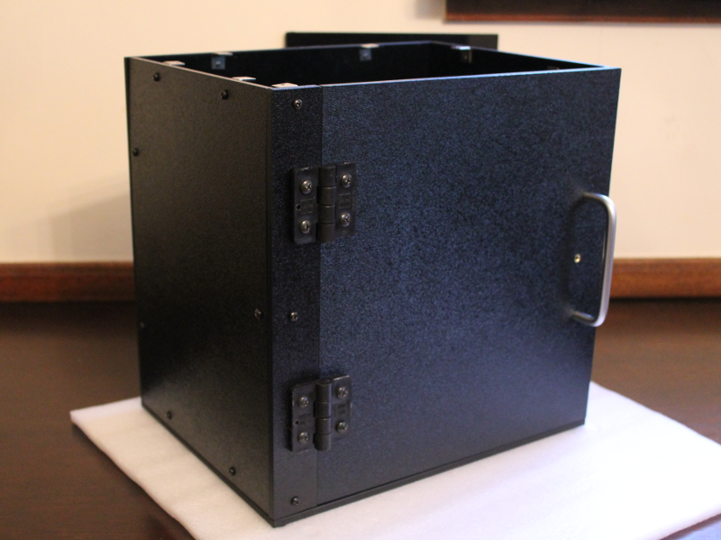

Step 6: Assembly of the enclosure¶
These steps are all very similar. You will just use the remaining screws (Hardware Bag 6) to attach all of the panels via the RA brackets.

Step 2 - Attach right-side panel¶
Use 2 screws to attach the right-side to the base Use 2 screws to attach the right-side to the back panel


Step 3 - Attach left-side panel¶
Use 2 screws to attach the left-side to the base Use 2 screws to attach the left-side to the back panel


Step 4 - Attach the door¶
Use 1 screw to secure the door post to the base and 1 screw to secure the door post to the left-side panel
